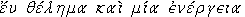
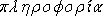
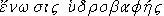
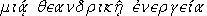
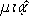
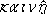

|
| A B C D E F G H I J K L M N O P Q R S T U V W X Y Z |
A Melchite patriarch of that see in the seventh century, and one of the authors of Monothelism; d. about 641. He had been since 620 Bishop of Phasis in Colchis when the Emperor Heraclius, in the course of his Persian campaign (626), consulted him about a plan for bringing the Monophysites of Egypt back to the Church and to the support of the empire. The plan, suggested by Sergius, Patriarch of Constantinople, consisted of confessing the faith of Chalcedon on the two natures of Christ, while practically nullifying it by the admission of one theandric will and operation, . Cyrus hesitated at first, but being assured by Sergius that this formula was opposed to neither the Fathers nor Chalcedon and was destined to achieve great results, he became a stanch supporter of it, and was, in return, raised by Heraclius to the then vacant See of Alexandria (630). Once a patriarch, he set himself vigorously to effect the desired union. In a synod held at Alexandria he proposed what is known as the  or "Satisfactio", an agreement in nine articles, the seventh of which is a bold assertion of the Monothelite heresy. The Monophysites (Theodosians or Severians) welcomed the agreement with, however, the remark that Chalcedon was coming to them, not they to Chalcedon. The union thus effected was adroitly exploited, with a view to win over Pope Honorius to Monothelism; otherwise it proved ineffective, and soon fell into discredit under the name of , contemptuously called the "washy union". Cyrus persevered none the less in his adhesion to the compromise, and even accepted the Ecthesis, a new imperial formulary of the same error (637). When Omar's general, Amru, threatened the Prefecture of Egypt, Cyrus was made prefect and entrusted with the conduct of the war. Certain humiliating stipulations, to which he subscribed for the sake of peace, angered his imperial master. He was recalled and harshly accused of connivance with the Saracens; however, he was soon restored to his former authority, owing to the impending siege of Alexandria, but could not avert the fall of the great city (640) and died shortly after.
From Cyrus we have three letters to Sergius and the "Satisfactio", all preserved in the acts of the Roman Synod of the Lateran and of the Sixth Œcumenical Council (Mansi, X, 1004; XI, 560, 562, 964). The first letter is an acceptation of the Ecthesis; in the second Cyrus describes his perplexity between Pope Leo and Sergius; the conversion of the Theodosians is narrated in the third. The seventh article of the "Satisfactio" — the others are irrelevant — reads thus: "The one and same Christ, the Son, performs the works proper to God and to man by one theandric operation [] according to St. Dionysius". Cyrus' chief opponents, St. Sophronius, d. in 637 (Epistola synodica, Mansi, XI, 480), and St. Maximus, d. in 662 (Epistola ad Nicandrum; disputatio cum Pyrrho, P.G., XCI, 101, 345), reproached him for falsifying the then much-respected text of Dionysius and substituting  for  (new). They showed, moreover, the inanity of his claim to the support of the Fathers, and explained how the Divine and human natures of Christ, sometimes styled one, because they belong to the same person and work in perfect harmony, can no more by physically identified than the natures from which they proceed. Historians are not agreed as to how Cyrus came by this error. Some think that he was, from the outset, a Monophysite at heart. Others, with more reason, hold that he was led into error by Sergius and Heraclius. Cyrus was condemned as a heretic in the Lateran Council of 649 (Denzinger, Enchiridion, 217, 219) and in 680 at the Third Œcumenical Council of Constantinople (Denzinger, 238; Mansi, XI, 554). (See MONOTHELITES.)
NEALE, History of the Holy Eastern Church (London, 1847), II; HEFELE, Conciliengesch. (Freiburg, 1877), III; PETAVIUS, Dogmata Catholica (Paris, 1866), V, i, 19; BURT, History of the Later Roman Empire (London, 1880); MANN, Lives of the Popes (London, 1902), Vol. I, Pt. I, 330; SCHWANE-DEGERT, Hist. des dogmes (Paris, 1903), II; TURMEL, Hist. de la théol. positive (Paris, 1904).
APA citation. (1908). Cyrus of Alexandria. In The Catholic Encyclopedia. New York: Robert Appleton Company. Retrieved April 26, 2010 from New Advent: http://www.newadvent.org/cathen/04597c.htm
MLA citation. "Cyrus of Alexandria." The Catholic Encyclopedia. Vol. 4. New York: Robert Appleton Company, 1908. 26 Apr. 2010 <http://www.newadvent.org/cathen/04597c.htm>.
Transcription. This article was transcribed for New Advent by WGKofron. With thanks to Fr. John Hilkert, Akron, Ohio.
Ecclesiastical approbation. Nihil Obstat. Remy Lafort, Censor. Imprimatur. +John M. Farley, Archbishop of New York.
Contact information. The editor of New Advent is Kevin Knight. My email address is webmaster at newadvent.org. (To help fight spam, this address might change occasionally.) Regrettably, I can't reply to every letter, but I greatly appreciate your feedback — especially notifications about typographical errors and inappropriate ads.